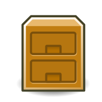

Bob is a signal-processing and machine learning toolbox originally developed by the Biometrics Group at Idiap, in Switzerland. Bob is primarily developed through GitHub. Follow the links bellow to get you started.
Download |
User Guide stable | nightlies |
Discuss |
Issues |
Satellite Packages |
 Database Reference |
 Github |
Wiki |
© Idiap Research Institute, Switzerland.